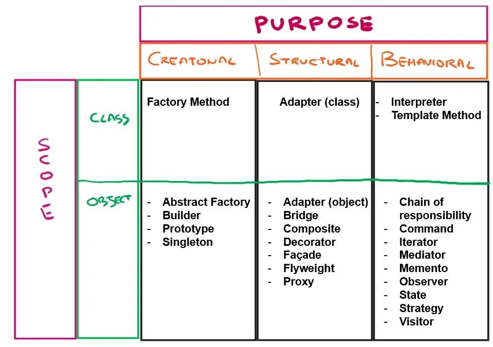
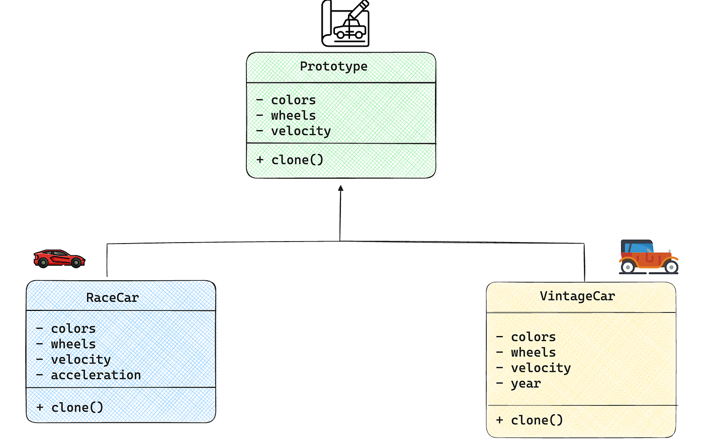

Design Patterns with Python for ML Engineers: Prototype
Learn how to use the Prototype design pattern to enhance your code.
May 6, 2024 · Design Pattern, Prototype
Introduction
This is not the first post blog I am writing about design patterns. In my recent posts, I’ve received positive feedback on this topic because apparently using design patterns is not a common practice in the Python world. I think people should learn these patterns to enhance and improve their code. Moreover, today AI software is heavily based on Python, so I think that these tutorials are useful to all the people dealing with AI. I will run my code on the Deepnote: which is a cloud-based notebook that’s great for collaborative data science projects.
What is a design pattern?
Design patterns provide well-defined solutions to problems that recur very often when designing software. Rather than solve the same issue over and over again, these patterns offer reusable solutions, accelerating the whole development process.
Design patterns essentially provide a robust and tested blueprint to address specific problems optimally, making our lives easier.
There are various types of design patterns, generally categorized into three groups:
- Creational Patterns: These focus on the creation of objects, providing mechanisms for object creation while keeping the system flexible and efficient.
- Structural Patterns: They revolve around the composition of classes and objects, dealing with the relationships between different components to form larger structures.
- Behavioural Patterns: This category governs how classes and objects interact, outlining the distribution of responsibilities among them. It defines protocols for communication and collaboration within a software system.”

The Problem
When we work on big projects using Python, we generally adopt an object-oriented programming methodology to make the code more readable. Usually, we end up having a lot of classes and tons of objects.
Sometimes what happens is that we want to create an exact copy of an object. How do you do that? In a naive manner, you can instantiate another object of the same class and then copy each internal field of the object you want to clone. But this process is slow and boring.
Moreover, there could be another problem. Sometimes you cannot instantiate an object that easily, because calling the constructor of a class can be costly. Think for example the case in which in the constructor you run an API request to an external service that you pay.
How can we solve this? Well… with design patterns, in particular with a creational one: the prototype.
The Prototype Design Pattern
First of all, we need to create an abstract class (or interface) with the clone() abstract method. All the classes that we create will then have to instantiate this interface and define how to clone an object of the class itself. In this way, the duty of creating a clone is not of the class but of the object itself.

I am now going to create an abstract class by using the ABC Python library.
The following class will define a vehicle prototype with some attributes.
from abc import ABC, abstractmethod
import time
# Class Creation
class Prototype(ABC):
# Constructor:
def __init__(self):
# Mocking an expensive call
time.sleep(2)
# Base attributes
self.color = None
self.wheels = None
self.velocity = None
# Clone Method:
@abstractmethod
def clone(self):
passNow we can create some class that will implement this interface, and to do that in particular they have to implement the clone() abstract class. In Python in order to create a copy we can use the deepcopy() or a shallow copy() method of the copy library.
To be specific, a shallow copy duplicates references to non-primitive fields, while a deep copy generates new instances with identical data.
Let’s now define a concrete class. I am going to make the constructor sleep for 2 seconds to simulate the costly call of the constructor as explained in the introduction.
import copy
import time
class RaceCar(Prototype):
def __init__(self, color, wheels, velocity, attack):
super().__init__()
# Mock expensive call
time.sleep(2)
self.color = color
self.wheels = wheels
self.velocity = velocity
# Subclass-specific Attribute
self.acceleration = True
# Overwriting Cloning Method:
def clone(self):
return copy.deepcopy(self)Every time that I want to instantiate a RaceCar object it is going to take 2 seconds, because of the sleep method. We can monitor this.
import time
start = time.time()
print('Starting to create a race car.')
race_car = RaceCar("red", 4, 40)
print('Finished creating a race car', )
end = time.time()
#will take 2 seconds
print('Time to complete: ' , end-start)Nice! We created a race car, wasn’t that hard. Now I want to make 5 copies of the car because my purpose is to develop a video game with a lot of cars. We can simply do the same iterating in a for loop.
cars = []
start = time.time()
print('Start instantiating clones', )
for i in range(5):
race_car = RaceCar("red", 4, 40)
cars.append(race_car)
end = time.time()
print('Time to complete: ', end-start)If you run this code it will take 2s*5 so 10s in total! 😵💫
What if we use instead the clone method? Let’s try it out.
# now we create clones by using propotypes
cars = []
start = time.time()
print('Instantiating first car', )
race_car = RaceCar("red", 4, 40)
for i in range(5):
race_car = race_car.clone()
cars.appen(race_car)
end = time.time()
print('Time to complete: ', end-start)This code will take only 2s to run, which is the time needed to instantiate the first car. The creation of the other cars will take no time. Fantastic!
A Machine Learning Example
How can this model used in a machine-learning script? Let’s suppose that you instantiate a model of a predefined PyTorch class like the following.
import copy
import torch
import torch.nn as nn
class NeuralNetwork(nn.Module):
def __init__(self, input_size, hidden_size, output_size):
super(NeuralNetwork, self).__init__()
self.layer1 = nn.Linear(input_size, hidden_size)
self.activation = nn.ReLU()
self.layer2 = nn.Linear(hidden_size, output_size)
def forward(self, x):
x = self.layer1(x)
x = self.activation(x)
x = self.layer2(x)
return x
def clone(self):
return copy.deepcopy(self)Once the class is defined you can create your model object.
# Base neural network configuration
base_model = NeuralNetwork(input_size=10, hidden_size=64, output_size=1)Now, you want to implement a variation of your model, maybe you’re interested in changing only one or two parameters. What you can do is create a clone of the first model and change manually those parameters.
# Clone the base model to create variations
model_variation_1 = base_model.clone()
model_variation_1.activation = nn.Tanh()
model_variation_2 = base_model.clone()
model_variation_2.hidden_size = 128
# Display summaries of the models
print("Base Model Summary:")
print(base_model)
print("\
Model Variation 1 Summary:")
print(model_variation_1)
print("\
Model Variation 2 Summary:")
print(model_variation_2)Done, easy right? 😁
Final Thoughts
In this article, I explained why you should adopt design patterns in Python. A design pattern is not something you can use in only few programming languages (e.g. Java), but it is a theoretical solution to a common problem. Instantiating a lot of objects with the same attributes can be slow and costly, that’s why by specifying a clone method in an interface we can mitigate this problem and create as many clones as we want.
As a tip, what you can do to improve your skills as an AI engineer is to improve your skills as a software engineer!
If you are interested in this article follow me on Medium! 😁
💼 Linkedin ️| 🐦 Twitter | 💻 Website
You might be interested in some of my past articles about design patterns :
- Design Patterns with Python for Machine Learning Engineers: Observer
- Design Patterns with Python for Machine Learning Engineers: Abstract Factory
- Design Patterns with Python for Machine Learning Engineers: Builder
You can find this article also on Towards Data Science.